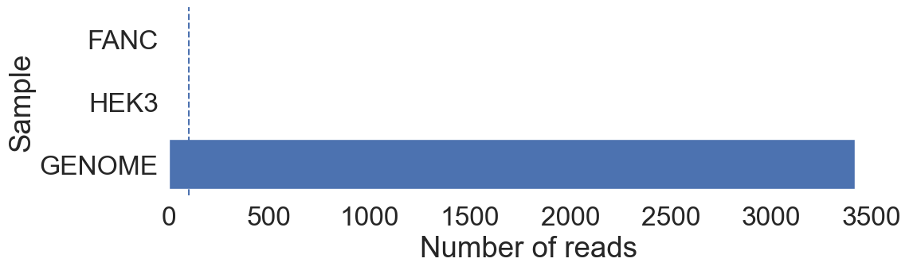
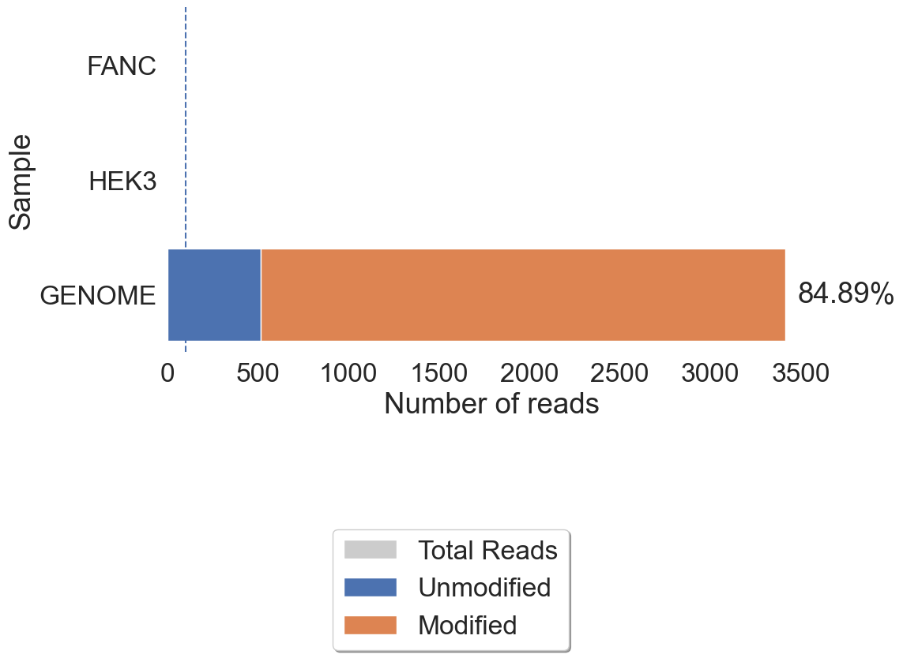

CRISPResso2
Analysis of genome editing outcomes from deep sequencing data
CRISPRessoPro — faster compute, priority queues, long-term storage, and advanced reporting. Learn more.
CRISPResso Pooled Output
Each bar shows the total number of reads allocated to each amplicon. The vertical line shows the cutoff for analysis, set using the --min_reads_to_use_region parameter.
Each bar shows the total number of reads aligned to each amplicon, divided into the reads that are modified and unmodified. The vertical line shows the cutoff for analysis, set using the --min_reads_to_use_region parameter.
CRISPRessoPro — faster compute, priority queues, long-term storage, and advanced reporting. Learn more.
CRISPResso Pooled Output
pooled-mixed-mode-genome-demux
CRISPRessoPooled Read Allocation Summary

Data: CRISPRessoPooled summary
CRISPRessoPooled Modification Summary

Data: CRISPRessoPooled summary